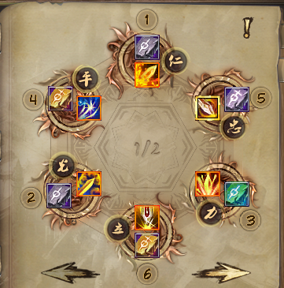
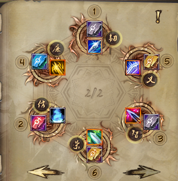
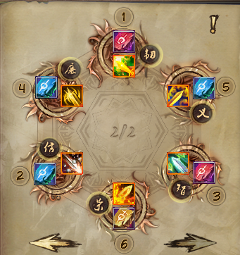

Гайд был написан в марте 2025 года.
Перед сражением баффаемся этими скиллами:
Таинственной мантрой клинка баффаемся под обеими пухами, для достижения максимальной эффективности.
Когда льём босса, применяем последовательно:


 +
+ 

Да, именно в такой последовательности.
Запал кидаем с ПЗ-пухой. 
А затем - подменяем на основную.
Рекомендую выставить на панель основную и ПЗ-пуху, чтобы по кнопкам их быстро переключать.
Затем баффаемся "Великим сиянием меча" для 85% пения. 
Затем используем последовательно:


В "Великий закалённый меч" - сапфировую руну, чтобы порезать физ. деф.
В "Великое невидимое лезвие" - золотую руну, чтобы шанс крита был 100%.
В "Пань Гу - Великий меч-ветрогон" - серебряную руну, чтобы была большая порезка ПЗ у босса.
В это же время используем на джинне яд  и ярость (у меня они стоят на Shift+F2 и Shift+F3 соответственно, можно переназначить их для удобства нажав на клавишу K и пролистав вниз до умений джиннов).
и ярость (у меня они стоят на Shift+F2 и Shift+F3 соответственно, можно переназначить их для удобства нажав на клавишу K и пролистав вниз до умений джиннов).
Также стоит учесть, что, если мы говорим о партийном ПвЕ, то не стоит кидать яд, если в пати есть син, потому что это перебьёт его отвод.
Затем кидаем основной макрос (в следующей секции рассказывается о них подробнее).
Макросов делаем несколько: один обычный (основной), для общего применения (1):

Для маг. иммунов (2):

Для физ. иммунов (3):

Также замечу, что в стандартных бьющих скиллах:
 ,
,  , можно менять тип урона с маг. на физ. и наоборот, если вставить рубиновую руну.
, можно менять тип урона с маг. на физ. и наоборот, если вставить рубиновую руну.
А вот, как я расставил руны:


Можно поменять руны в "Великом мече огненного духа" и "Великом мече костоломе" :

Тогда будет урон ещё выше по обычным мобам, но "Великий меч костолом" , но тогда не все скиллы в макросе (3) будут бить магией, что немного лишает универсальности.
Отдельно отмечу таинственную транспозицию  , которая позволяет перетянуть к себе другого персонажа. Для её использования кидаем дуэль, затем применяем транспозицию, меняя местами персонажей, а затем - "Великий меч императора"
, которая позволяет перетянуть к себе другого персонажа. Для её использования кидаем дуэль, затем применяем транспозицию, меняя местами персонажей, а затем - "Великий меч императора"  , чтобы притянуться самому.
, чтобы притянуться самому.
У стража есть 3 самохила:

Если стражей в пати двое, то можно договориться о том, кто кидает запал (обычно тот, у кого больше показатель защиты (ПЗ)). Если босс пробивается дольше 15 секунд (например, финалка в 4-1, боссы в ПП и ГШ), а стражей в пати двое, то запал чередуют: вначале кидает один, а потом - другой. Снова же, можно договориться, кто первый. Значок дебаффа у запала такой: 
В ДР дракона открывает обычно прист печатью Бога с серебряной руной  . Но син и страж в связке тоже могут это сделать. Перед тем, как ПЛ запустит дракона, син кидает стражу дуэль (или наоборот), син кидает аркан
. Но син и страж в связке тоже могут это сделать. Перед тем, как ПЛ запустит дракона, син кидает стражу дуэль (или наоборот), син кидает аркан  на стража, а тот после этого кидает на дракона "Божественный блуждающий призрак" , который переносит аркан на дракона.
на стража, а тот после этого кидает на дракона "Божественный блуждающий призрак" , который переносит аркан на дракона.
Идеально, если страж ещё успевает применить и запал, это не помешает, но если есть опасения запутаться, то лучше кидать только перенос.
Добавлю, что если син кидает аркан, но при этом дебафф  на страже не появляется, то у сина может стоять изумрудная руна в аркане. Нужно попросить его убрать её оттуда или заменить.
на страже не появляется, то у сина может стоять изумрудная руна в аркане. Нужно попросить его убрать её оттуда или заменить.
На 2-м боссе в ПП нужно сбивать каст, не давая боссу ронять клинки на сопартийцев. В этом нам поможет "Великая мощь яростного медведя"  , которая с изумрудной руной позволяет с высоким шансом (5-7 руна - 80%, 8-9 - 90%) сбить этот каст.
, которая с изумрудной руной позволяет с высоким шансом (5-7 руна - 80%, 8-9 - 90%) сбить этот каст.
Иногда удобно пробивать боссов в пристовскую печать Бога с серебряной руной, чтобы заранее дать раздебафф (но в данном случае это не является необходимостью, как на драконе в ДР). Так делают в 4-2 на втором боссе и иногда на финалке в ДР. В этом случае печати страж может кидать сразу (хотя мне говорили, что лучше - секунд за 10 до окончания действия печати приста), а запал - условно за 3 секунды до окончания действия печати.
В бюджетном варианте у стража 70 ПА домопуха и р8р2 пуха . Стражу нужно собирать 80 ПЗ домопуху, но не из основной 70 ПА, а с нуля, из самой болванки, чтобы не потерять в ПА и, соответственно, в дамажности. Добавлю, что у стража есть 2 подходящие пухи: помимо парных мечей, есть и одиночный . Есть свои плюсы и у парных, и у одиночных мечей:
Также отмечу, что грядёт обнова, в которой очень сильно увеличат дамажную ценность 80 ПА домопухи, так что лучше не спешить тратить деньги на 80 ПЗ, а подкопить ресурсы.